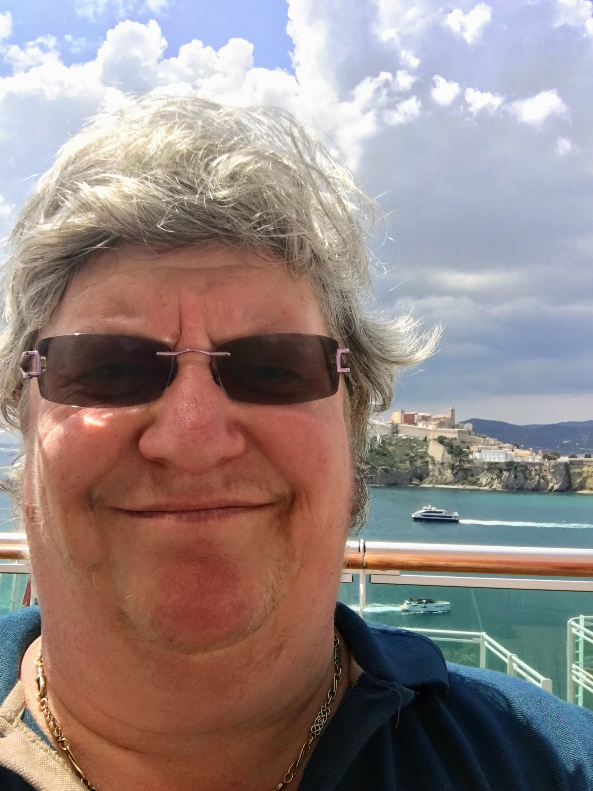

Britannia Cruise 2018
Sunday May 6th 2018

Today, we woke up in Eivissa or Ibiza Town. There was
a bit of a walk to the shuttle buses that took us into town, and an enormous gap between the low pavement and the high step of the bus. Mum's
little legs would not have coped. Luckily, she decided to stay on the boat. We were dropped off at the Port/Marina, which was very busy, with departures and
arrivals of ferries to the other Balearic Islands, and the Spanish mainland, Dénia, near Alicante and Barcelona.
Eivissa is the capital and the largest city on the island of Ibiza. The newer part of the town at the harbour level is full of shops,
bars and restaurants, and in the summer, clubs, especially gay ones. There is a modern
harbourside boulevard, and further inland, narrow winding streets.
Perched on a small mountain next to the sea and overlooking the town is the fortified old town of Dalt Vila, a UNESCO World Heritage site.
Originally called Ibosim and founded by the Phoenicians, Dalt Vila has been added to by successive occupiers and was once one
of the most important coastal cities in the Mediterranean. The last addition was the Renaissance defensive walls that surround it,
which Kings Charles I and Philip II of Spain had constructed to defend against the French and the Ottomans.
The dramatic main entrance gateway is up a slope, traversing a stone drawbridge
through the Portal de Ses Taules entering into an ancient cobbled stone courtyard.
Apparently, the views from the top are great, and the Catedral de Santa María de las Nieves (Cathedral of Our Lady of the Snows)and Castell
d'Eivissa are worth a visit, but it was very hot, and I didn't want to leave Mum on her own for too long, so I opted to stay on the lower
level, walking all the way along to the breakwater, from where you could see Britannia at her berth.
Back on board, we had a fabulous view of the Old Town perched on the hill.